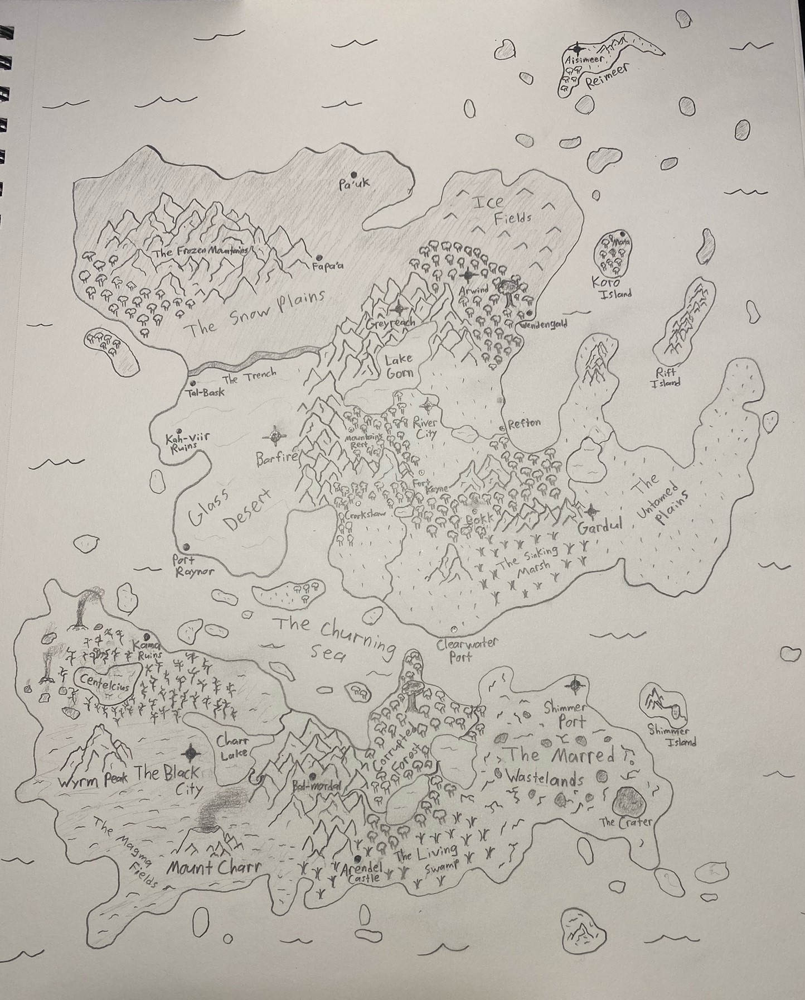

General Info
Locations:
-Select-
Aisimeer
Arendel Castle
Arwind
Bal-mordal
Barfire
Black City
Bokk
Centelcius
Charr Lake
Clearwater Port
Corrupted Forest
Crater
Crookshaw
Fapa'a
Fort Kayne
Frozen Mountains
Gardul
Glass Desert
Greyreach
Ice Fields
Kah-viir Ruins
Kama Ruins
Koro Island
Lake Gorn
Living Swamp
Magma Fields
Marred Wastelands
Mata
Mount Charr
Mountain's Rest
Pa'uk
Port Raynor
Refton
Reimeer
Rift Island
River City
Shimmer Island
Shimmer Port
Sinking Marsh
Snow Plains
Tal-Bask
The Trench
Untammed Plains
Wendengald
Wyrm Peak
